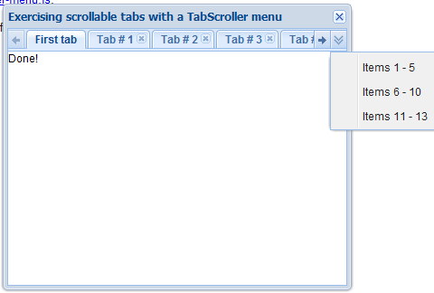

Tabs
导航式容器，以切换的方式在多个页面间切换浏览。通过简单的配置展示多页签信息，同时组件提供丰富的事件支持，比如选中页签，关闭页签，添加页签等等；支持各个页签以ajax方式加载内容（默认iframe，懒加载）；
依赖组件
- FAjax
适用范围
可以用于主页面的多页签导航，也可以用于页面中划分页面模块布局；
约束
- 支持静态页面和动态页面两种方式，其中动态页面采用iframe的话，iframe自身存在内存泄漏，请慎重使用；但是使用页面片段的方式则要处理好id重提的问题
注意事项
- 无
使用示例
第一个页签静态页面，第二个页面片段，其他iframe方式：
动态添加、删除一个标签页，主动刷新一个tab页
属性
| 名称 | 类型 | 描述 | 默认值 |
|---|---|---|---|
| active | Number,String |
初始化时被激活页签的索引（从0开始计数）或者tabId。 示例： $('#make-tab').FTabs({active : 1});//初始化时激活第二个页签
$('#make-tab').FTabs({active : 'tab-1'});//初始化时激活Id为'tab-1'的页签
|
0 |
| fit | Boolean,String |
自适应开关，true表示在第一次展现的时候，自动根据父亲计算自己的大小，false不做计算，默认为false 示例： |
"false" |
| id | String |
标识(仅标签使用) 示例： 无 |
随机生成 |
| tabsHeaderCls | String |
页签标题的样式类，主要用于规定页签的高度，目前提供了四种大小："f-tabs-small-tab"、"f-tabs-normal-tab"、"f-tabs-big-tab"和"f-tabs-large-tab"， 分别对应小、中、较大、大；除此之外，用户可以根据自己的要求定制。 示例： |
"f-tabs-normal-tab" |
| tabWidth | Number,String |
页签头部的宽度，单位像素，只允许为数值或者数值类的字符串。默认为"auto"，即根据内容自适应宽度，内容越多越宽。
示例： |
"auto" |
| height | String |
此组件的整体高度（包括border和padding，单位像素），默认为auto。 示例： 无 |
"auto" |
| position | String |
页签头部的位置，可为top、left、bottom，暂不支持，目前只支持在顶部 示例： $('#make-tab').FTabs({position : 'left'});//页签头部在组件的左边
|
'top' |
| width | String |
此组件的整体宽度（包括border和padding，单位象素）。 示例： 无 |
"auto" |
事件
| 名称 | 参数 | 描述 |
|---|---|---|
| onActive | function(index, tabId) |
当页签被选中后执行的方法。 参数: $('#make-tab').FTabs({
onActive : function(n) {
alert('tab ' + n + ' has been activated!');
}
});
|
| onAdd | function(index, tabId) |
当新页签被添加之后执行的方法。 参数: $('#make-tab').FTabs({
onAdd : function(index, tabId) {
alert('you have added a tab at position:' + index );
}
});
|
| onBeforeActive | function(index, tabId) |
当页签被选中之前执行的方法，方法实现在返回false的情况下，会阻止标签页切换。 参数: $('#make-tab').FTabs({
onBeforeActive : function(n) {
alert('tab ' + n + ' will be activated!');
}
});
|
| onBeforeAdd | function(op, pos, active) |
当新页签被添加之前执行的方法。 参数: $('#make-tab').FTabs({
onBeforeAdd : function(config) {
alert('you will add a tab at position:' + config.index );
}
});
|
| onBeforeClose | function(n, tabId) |
当页签被关闭之前执行的方法，回调返回false，会阻止页签被关闭。 参数: $('#make-tab').FTabs({
onBeforeClose : function(n, tabId) {
alert('tab ' + n + ' will be closed!');
}
});
|
| onBeforeCloseAllOthers | function(n, tabId) |
当关闭除指定页签外的所有页签前触发 参数: $('#make-tab').FTabs({
onBeforeCloseAllOthers : function() {
alert('all other tabs will be closed !');
}
});
|
| onClose | function(n, tabId) |
当页签被关闭之后执行的方法。 参数: $('#make-tab').FTabs({
onClose : function(n, tabId) {
alert('tab ' + n + ' has been closed!');
}
});
|
| onCloseAllOthers | function() |
当关闭除指定页签外的所有页签后触发 示例： $('#make-tab').FTabs({
onCloseAllOthers : function() {
alert('other tabs are were closed !');
}
});
|
| onLoadComplete | function(index, tabId) |
当页签使用ajax方式加载内容，加载完成后执行的方法。目前不支持iframe模式下 参数: $('#make-tab').FTabs({
onLoadComplete : function(index, tabId) {
alert(tabId + 'has just been loaded!' );
}
});
|
| onTabbarRClick | function(e) |
页签栏右键事件 参数: $('#make-tab').FTabs({
onTabbarRClick : function(e) {
alert('tabbar right-clicked!');
}
});
|
| onTabDblClick | function(index, tabId) |
当页签被双击时触发 参数: $('#make-tab').FTabs({
onTabDblClick : function(n) {
alert('tab ' + n + ' double-clicked!');
}
});
|
方法
| 名称 | 参数 | 描述 |
|---|---|---|
| activate | (tab) |
选中特定的页签，触发activate事件。 参数://激活第一个页签
$('#make-tab').FTabs('activate', 0);
|
| add | (Object) |
在index处增加一个tab页签，参数为json格式的配置项。 配置项参数：
$("#tabs").FTabs("add", { // 在标签栏的末尾添加一个以iframe方式加载的tab页
title: "New Tab",
url: "http://www.hundsun.com",
width: 120
}, "last", false);
|
| closeOthers | (n) |
关闭除特定的页签外的所有页签，所有被关闭页签的close事件都会被触发 // 保留第一个标签
$('#make-tab').FTabs('closeOtherTabs', 0);
|
| Closetab | (n) |
关闭特定的页签，如果n指向当前页签，则会选中下一页签；如果当前页签是最末尾的页签，则会选中第一个页签。可以看到每关闭一个页签就会触发一次close事件。 //关闭第一个页签
$('#make-tab').FTabs('closeTab', 0);
|
| getActivated | () |
返回当前选中的页签的tabId。 示例：//获取当前选中页签的tabId
var activatedTabId = $('#make-tab').FTabs('getActivated');
|
| getAlter | (id) |
页签索引和tabId的转换器。传入其中的一个值，获取另一个值。 参数://获取第一个页签的tabId
var tabId = $('#make-tab').FTabs('getAlter', 0);
|
| getTabsCount | () |
获得所有页签的数目。 示例：//获取页签的总数
var total = $('#make-tab').FTabs('getTabCount');
|
| reload | (index, url, iframe) |
根据第n个页签当前的数据源，重新加载该页签。 //重新加载第一个页签的内容
$('#make-tab').FTabs('reload', 0);
|
| setSize | (w, h) |
设置组件的高宽，组件会自动调整标签页内部toolbar的位置 参数: |
| setTitle | (n) |
设置页签的title 参数: |